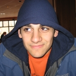
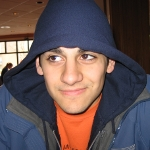

I have a PhD in
Industrial and Operations Engineering from the
University of Michigan under
Yili Liu where I developed models of dual-task performance in Queueing Networks - Adaptive Control of Thought-Rational (QN-ACTR) and the effect of incentive-induced effort on
time-sharing efficiency between tasks. I studied task concurrency and the contributions of individual task execution and time sharing to performance improvements under increased effort. I developed custom
software for experimental task interface, data collection, and data analysis, and a Wii-remote cursor controller in Java using four USB-powered infrared LEDS.
I received a bachelor's degree in Computer Science from U-M in 2007 and a master's degree in Computer Science from Wayne State University in 2009. My master's thesis concerned the adaptation of Cultural Algorithms to solve multi-objective optimization
problems.
My recent hobby projects have been web apps and libraries, and most are public on my github page.
Tabasci
Tabasci is a web-baed collaborative real-time guitar tablature editor that I built in Dart with a Firebase data and hosting backend.
It is designed it with a strong late-90s ascii text aesthetic despite its modern and powerful editing features. It provides plain-text to support sharing on any tab hosting service.
Enamerator
Enamerator is a Markov chain-based name inventor trained on American name data that provides a never-ending list of randomly-generated namves.
It is parameterized to allow the user to specify a length range and prefix. The names tend to sound like names from science fiction.
You can find me on
twitter.com/sirctseb,
github.com/sirctseb, or by email
(bestchris@gmail.com).
ARL
I work at the Army Research Laboratory where I have developed APIs in C#, Java, and C++ for accessing data transmitted via RabbitMQ, each using the native event system or accepted callback paradigm of the language. The APIs encapsulate
the complexities of communicating with RabbitMQ and unmarshalling data to allow client code to subscribe to events and receive data in language-native classes.
I also wrote reference documentation and development guides for each API and produced tools to aid client application development. Wrote package to create game objects in the Unity game engine based on the data.
University of Michigan
From 2006 to 2013 I developed 3DSSPP a biomechanics analysis and job safety application for Windows. I integrated results and models from empirical biomechanics and ergonomics research into application features, rewrote the biomechanics analysis backend to improve speed, remove hard-coded legacy constants, and conform to modern code style, engaged with customers to identify bugs and desired features, trained new project members on the code base and managed development efforts.
I like puzzles, music, math, computer science, and irrigation.
I work on 3DSSPP, a job safety analysis program developed at the
Center for Ergonomics.
If you need sprinkler service, installation, or winterization in southeast Michigan, I know a great company:
Best Irrigation

 
